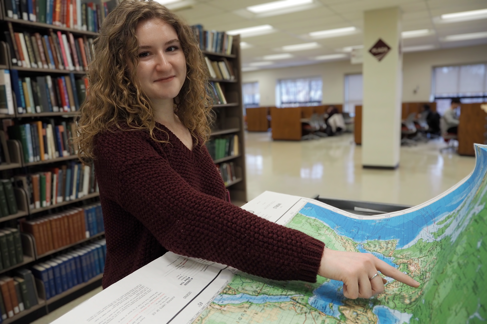

Hey there, I'm Isabelle Boyd
I'm a junior majoring in Professional and Technical Writing and Psychology at Virginia
Tech (hence the abundance of maroon). Throughout my academic career, I've been interested in the
application of writing skills to a variety of different mediums. I've written essays, research
papers, presentations, feature stories, technical reports, strategic promotional copy, and edited
countless pages of student writing as a Writing Center tutor for VT.
My recent professional endeavors, however, have seen the most practical, real-world applications of my skills. As the Digital Task Force Coordinator for Cook Counseling Center's outreach program, I've worked on outreach initiatives that combine writing and design in ways that have allowed me to focus on audience-based communication.
In Fall 2026, I'll also be joining Virginia Tech's Human Resources Department as an intern on the Talent Development team. I'm excited to continue developing my professional communication skills, by writing training programs and contributing to collaborative projects in a field I hope to gain more experience in.
Meanwhile, stay tuned to the Virginia Tech English Department's communication channels, as well as Virginia Tech News! Several projects that have been in the works during the Spring 2026 semester are scheduled to be released in the coming months.
If you'd like to learn more about me before I started my academic and professional journey at Virginia Tech, check out this VT news article a professor wrote about me leaving a post abroad in Ukraine and finding community within Hokie Nation.
